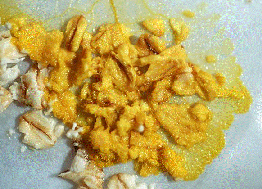

La "gelée des étoiles" (star jelly ou pwdre ser pour "putréfaction des étoiles" Hughes 1910) est une substance gélatineuse, généralement jaune sombre et à l'odeur fétide,
décrite comme laissée par des corps célestes (météores)
tombés sur terre De ces récits ont été des fictions comme La
couleur tombée du ciel de H. P. Lovecraft ou le film The
Blob.
Une hypothse a été avancée pour expliquer la présence de ces matires gélatineuses sans les relier à la chute de corps
célestes : le témoin voit un météore
de nuit. Le matin la personne part à sa recherche dans le champ ou la forêt où elle a semblé tomber. Au lieu de
trouver la météorite (dont ils sous-estimeraient généralement la distance à laquelle elles tombent Les chasseurs de météorites professionnels auraient appris depuis longtemps à
prendre ce facteur en compte lorsqu'il interrogent les témoins d'une chute de météores), ils tombent sur
une de flaque étrange de gelée fétide qui était en fait déjà là Corliss, William Roger: 1983.
Physarum

Cette "gelée" serait en fait produite par divers types d'organismes bactériens, plasmodiens et cellulaires sur de
l'herbe, un tapis de feuilles ou un sol organique. Ces "moules de vase" (slime moulds) ont de particulier que
des cellules séparées peuvent migrer ensemble pour former un plasmodium, cette masse à l'apparence de gelée
qui se transforme en un corps porteur de spores. Les plus grandes moules de vase sont celles du "royaume" des Myxomycota. Un fongueux myxomycota,
le Fuligo septica, peut former un aethalium (plasmodium spongieux) jusqu'à 20 cm de large
et 3 cm d'épaisseur. Au début le plasmodium est relativement translucide, pour devenir opaque à mesure que
les spores se développent. Ceci peut se produire sur des gazons, dans des prs ou sur le tapis de forêts Scagel et al 1982.
Il existe en fait plusieurs explications triviales au pwdre ser, dont :
Les moules de vase myxomycete, qui sont les moules de vase produisant les "gelées" les plus grandes et les plus
colorées. Certaines, comme le Fuligo peuvent être jaunes, ou même rougeâtres. Certaines espces de gelées
de Physarium peuvent avoir des plasmodia d'un jaune brillant. D'autres physaria sont d'un
bleu pâle, comme on le rapporte pour la "gelée des étoiles" classique des anciens récits.
Le Nostoc, un cyanobacterium pouvant former des masses de gelée vert pâle prs des racines
d'herbe. Les conditions doivent être trs moites pour que ces gouttes bactériennes se forment à l'air libre.
Le Tremella concrescens est un "fungus de gelée" qui se forme souvent sur les axes de touffes d'herbe. Il
forme des gouttes translucides pâles et irrégulires, tout comme on le rapporte pour la gelée des étoiles.
Les grenouilles femelles excrétent une substance gelatineuse qu'elles utilisent pour emballer leurs oeufs. Il
s'agit de la "gelée de grenouille" qui entoure les oeufs de grenouille. Cette gelée gonfle fortement de volume en
absorbant l'eau. Si un héron ou un autre oiseau avale une telle grenouille, il devra vomir cette gelée sans quoi
elle déborderait de son estomac. Ce vomi est une gélatine claire, contenant parfois des oeufs de grenouille ou
d'autres éléments.
Références :
Hughes, T McKenny, 1910. Pwdre Ser, Nature vol. 83, pp. 492-494.
Nieves-Rivera, Angel M. 2003. "The Fellowship of the Rings - UFO rings versus fairy rings". Skeptical
Inquirer. vol. 27, n° 6, 50-54.
Bychkov, Vladimir L.: "On nature of gelatinous meteors", Actes du 8me Symposium International sur la Foudre en
Boule (ISBL04). 3-6 août 2004. National Central University Chung-li, Taiwan. p. 76-78.
Bychkov, Vladimir L.: "The physical nature of gelatinous meteors 'Pwdre Ser' or 'Star Jelly'", The International
Journal of Meteorology vol. 30, n° 302, octobre 2005.